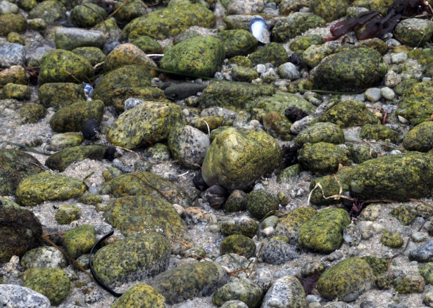
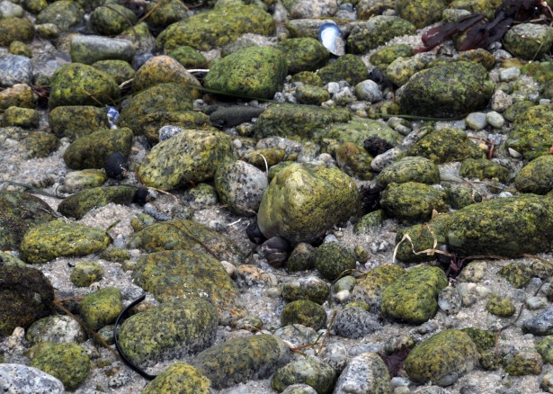

You decide to leave the plane in search of other survivors and find yourself aimlessly walking now. All that time spent walking, your feet start to hurt and you start to get hungry. On one side of you, there is small animal tracks, indicating possible food. On the other side of you, there are moss covered rocks, indicating a possible source of water. Which path do you choose to follow?
 
